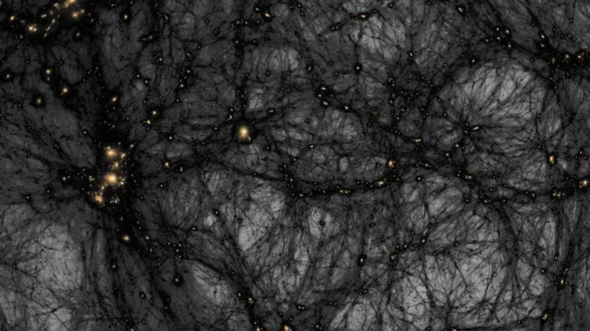

Unsolved¶
A running map of what humanity still hasn't figured out.

Most of this site is about what we know. This part is about what we don't: the biggest open problems in science, technology and society, each with a status showing roughly where things stand. As breakthroughs happen, the statuses change. That is the whole point. This page should look different in a few years.
The status labels¶
| Status | What it means |
|---|---|
| Unsolved | No credible path to a solution yet |
| Early research | Serious work has started, the basics are still missing |
| Active progress | Real momentum: labs, funding, measurable advances |
| Mostly solved | The core problem is cracked, scale or rollout remains |
| Solved | Done, and now in the history books |
The 15 grand challenges¶
The most ambitious things people are working on right now.
| # | Challenge | Status | Category |
|---|---|---|---|
| 1 | Safe artificial general intelligence | Early research | AI |
| 2 | Commercial fusion energy | Active progress | Earth |
| 3 | Understanding dark matter | Unsolved | Space |
| 4 | Understanding dark energy | Unsolved | Space |
| 5 | Finding life beyond Earth | Early research | Space |
| 6 | Reversing aging | Early research | Medicine |
| 7 | Curing Alzheimer's | Active progress | Brain |
| 8 | Clean water for everyone | Active progress | Society |
| 9 | Carbon removal at scale | Early research | Earth |
| 10 | Mapping the whole ocean floor | Active progress | Oceans |
| 11 | A settlement on Mars | Early research | Future humanity |
| 12 | Practical quantum computing | Active progress | Computing |
| 13 | Solving AI alignment | Early research | AI |
| 14 | Ending extreme poverty | Active progress | Society |
| 15 | Preventing the next pandemic | Active progress | Medicine |
Browse by category¶
Every problem follows the same profile format so you can compare them at a glance.